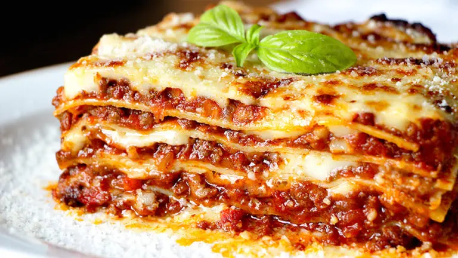

Lasagna Recipe

Description
Lasagna is a pasta dish served in overlapping capes of dough and different types of ingridients.
Here we will show you how to make an original italian style lasagna.
Ingridients
For the interiors of the Lasagna
- 600gr meat
- 300gr pork's bacon
- 1 onion
- 2 carrots
- 1 celery
- 200ml red wine
- 800gr tomato
- 50ml milk
- 3 table spoon of olive oil
- Salt
- Pepper
Dough
- 200gr flour
- 2 eggs
- 1 or 2 table spoon of olive oil
- A little of Salt
Bechamel Sauce
- 80gr butter
- 80gr flour
- 750ml milk
- Salt
- Pepper
- 200gr Parmesian Cheese
Preparation
- Cut the bacon in small cubes
- Put the bacon in a pan, and cook it at low heat
- Stir the bacon while it cooks
- Cut the vegetables in small cubes
- Add olive oil to the pan
- Add the vegetables to the bacon and oil
- Add Salt
- Cook, at low heat, until the onion, carrots and celery gets soft
- ...
Home